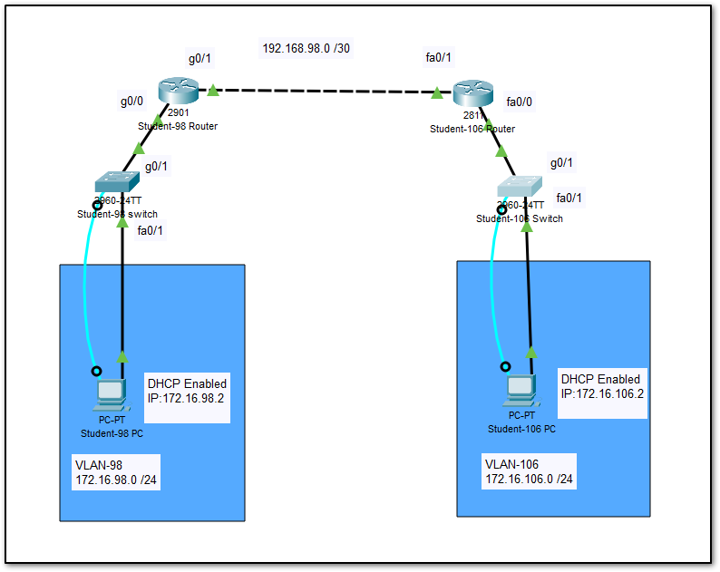

Name: Rohan Rajguru
UID: 98

en
conf t
hostname Switch-98
ip domain-name csn400.com
enable password seneca
!
vtp mode server
vtp domain student98
vlan 98
vlan 200
!
int fa 0/1
switchport access vlan 98
!
int gig 0/1
switchport mode trunk
switchport trunk allowed vlan 98,200
!
int vlan 200
ip address 172.16.200.2 255.255.255.0
no shut
exit
ip default-gateway 172.16.200.1
exit
!
crypto key generate rsa
1024
ip ssh version 2
line vty 0 4
transport input ssh
login local
username student98 password csn400
exit
en
conf t
hostname Router-98
ip domain-name csn400.com
enable password seneca
!
int gig 0/0
no shut
!
int gig 0/0.98
encapsulation dot1q 98
ip address 172.16.98.1 255.255.255.0
!
int gig 0/0.200
encapsulation dot1q 200
ip address 172.16.200.1 255.255.255.0
!
ip dhcp pool net98
network 172.16.98.0 255.255.255.0
default-router 172.16.98.1
!
int gig 0/1
ip address 192.168.98.1 255.255.255.252
no shut
!
ip route 172.16.106.0 255.255.255.0 192.168.98.2
crypto key generate rsa 1024 ip ssh version 2 line vty 0 4 transport input ssh login local username student98 password csn400 exit
Ensure that the partner has configured his router and switch properly.
Configure VMWARE, networks to have on VNET briding to the NIC connected to the back, and one NIC connected to the network.
Configure VM settings to have two networks adapters, and chose VNETS accordingly.
Ensure SSH connection from pc to switch and to the router.
Ensure that the partner is able to step 9 & 10 in his side as well.
Try pinging to partner pc, using his/her IP.
If successful, call sir for VI.
!Configure switch with unique hostname, IPs containing Unique ID and configure for SSH access
en
conf t
hostname Switch-106
ip domain-name csn400.com
enable password seneca
!
vtp mode server
vtp domain student106
vlan 106
vlan 201
!
in fa 0/1
switchport access vlan 106
!
int gig 0/1
switchport mode trunk
switchport trunk allowed vlan 106,201
!
int vlan 201
ip address 172.16.201.2 255.255.255.0
no shut
exit
ip default-gateway 172.16.201.1
exit
!
!SSH setup script -- run this script separately!
crypto key generate rsa
1024
ip ssh version 2
line vty 0 4
transport input ssh
login local
username student106 password csn400
exit
en
conf t
hostname Router-106
ip domain-name csn400.com
enable password seneca
!
int fa 0/0
no shut
!
int fa 0/0.106
encapsulation dot1q 106
ip address 172.16.106.1 255.255.255.0
!
int fa 0/0.201
encapsulation dot1q 201
ip address 172.16.201.1 255.255.255.0
!
ip dhcp pool net106
network 172.16.106.0 255.255.255.0
default-router 172.16.106.1
!
int fa 0/1
ip address 192.168.98.2 255.255.255.252
no shut
!
ip route 172.16.98.0 255.255.255.0 192.168.98.1
!
!SSH setup script -- run this script separately!
crypto key generate rsa
1024
ip ssh version 2
line vty 0 4
transport input ssh
login local
username student106 password csn400
exit
Optional: Start Wireshark and capture all traffic on the network interface that is connected to the back room (NOTE: If you don't do this now, you will have to do it later, repeat the tests in the VI and catch all of this traffic.)
Perform the following actions from your Ubuntu VM:
Release and Renew your IP address
Ping the 192.168 interface that has been configured on your router
Ping your Partner's switch (this will fail)
Ping your own Switch
Ping your Partner's host
Stop the Wireshark capture and save the .pcap file.
If you did not run wireshark at the beginning of this inspection, you must run it now and re-do the inspection to capture the packets.
Post Lab 2 Submission
Submit a FILTERED .pcap file from the .pcap file created during your visual inspection that contains only the following packets:
All 4 DHCP packets that make up the complete DHCP process to assign your host an address
A PING sent from your host to your partner's host and the response back.
SCREENSHOTS:
Take screenshots of the output of each of the following commands from your Router:
sh ip route
sh ip int br
sh ip dhcp pool
sh ip dhcp binding
sh arp
Take screenshots of the output of each of the following commands from your Switch:
sh ip int br
sh sh vlan
sh vtp status
sh mac-address-table
sh arp
sh spanning-tree
DO NOT COMPRESS FILES(.zip, .7z, .rar, etc) INCLUDE EACH FILE INDIVIDUALLY OR ALTERNATIVELY, YOU MAY COMBINE ALL SCREENSHOTS INTO A SINGLE WORD DOCUMENT AND SUBMIT THE .docx FILE.